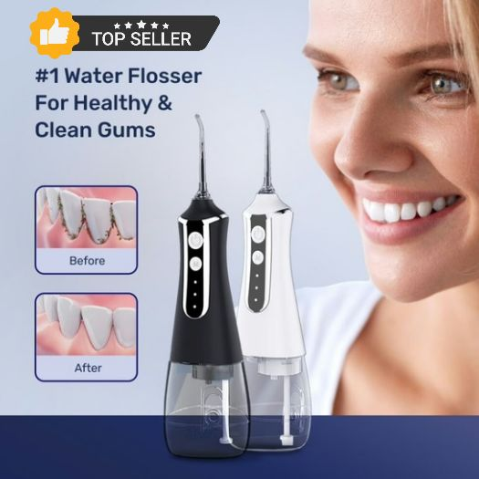
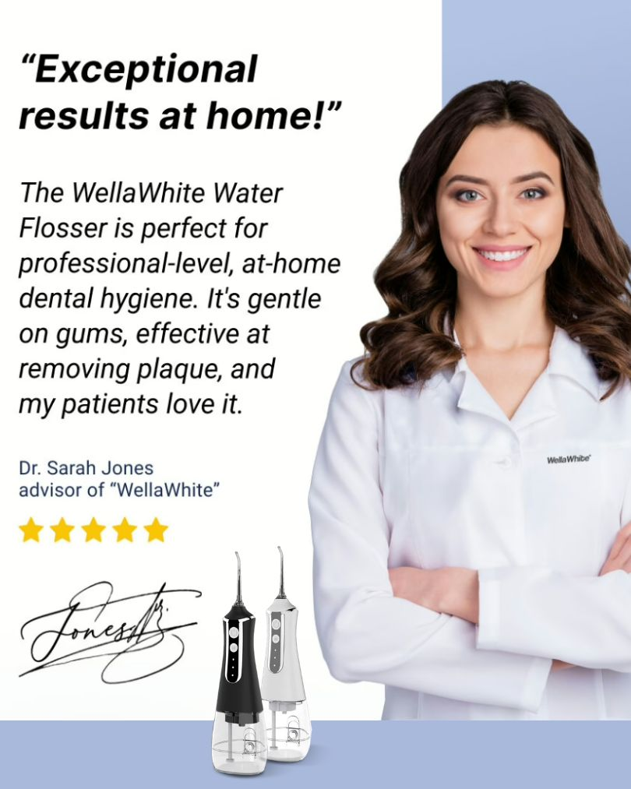
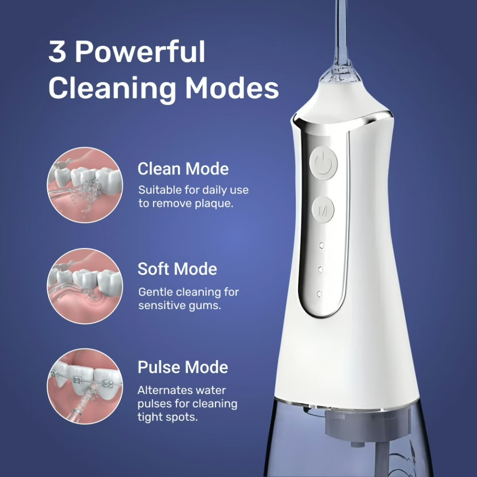
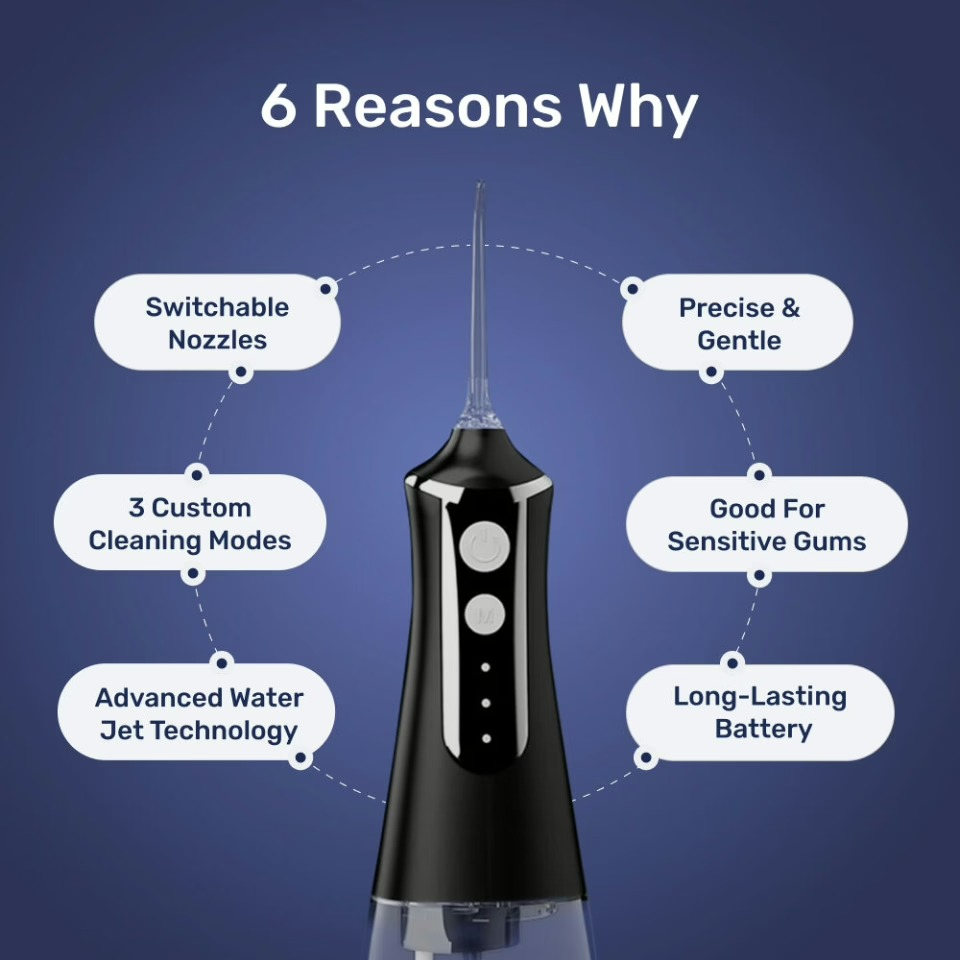
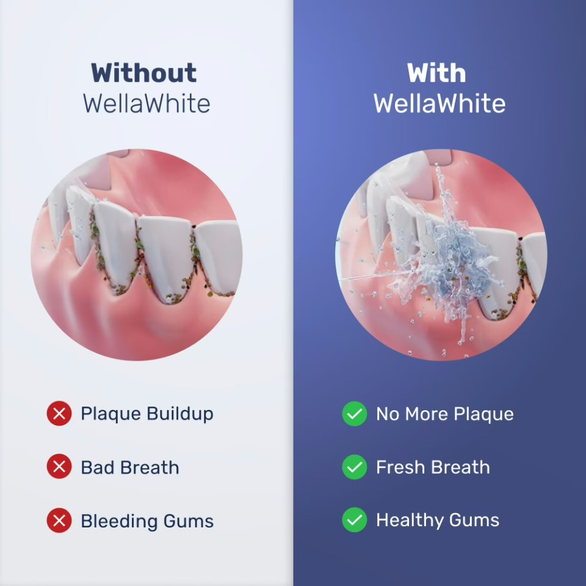

WellaWhite Munddusche

Reinige Zahnzwischenräume und Zahnfleischrand mit einem präzisen Wasserstrahl, drei Reinigungsmodi und austauschbaren Düsen für eine einfachere tägliche Routine.
- ✓ Fortschrittliche Wasserstrahl-Technologie für gezielte Reinigung
- ✓ 3 Reinigungsmodi, darunter eine sanfte Einstellung
- ✓ Austauschbare Düsen für präzise Anwendung
- ✓ Wiederaufladbar, tragbar und mit lang anhaltendem Akku

Gezielte Wasserstrahl-Reinigung für die tägliche Zahnhygiene
Die WellaWhite Munddusche ist ein wiederaufladbares Mundpflegegerät, das einen gebündelten Wasserstrahl zwischen die Zähne und entlang des Zahnfleischrands führt. So lassen sich Plaque und Speisereste aus Bereichen entfernen, die mit Zahnseide oft umständlich zu erreichen sind.
Drei Reinigungsmodi ermöglichen es, jede Anwendung an Komfort und Reinigungsbedarf anzupassen. Eine sanfte Einstellung eignet sich für empfindliche Zähne und empfindliches Zahnfleisch, während stärkere Modi mehr Wasserdruck für hartnäckige Rückstände bieten.
Austauschbare Düsen helfen dabei, den Wasserstrahl gezielt auf bestimmte Bereiche im Mund zu richten. Der fokussierte Strahl kann um Zahnspangen, Drähte und Brackets geführt werden und eignet sich dadurch auch für die Reinigung rund um kieferorthopädische Apparaturen.
Der große Wassertank unterstützt eine durchgängige Anwendung, während der wiederaufladbare Akku für den Alltag ausgelegt ist. Eine volle Ladung reicht laut Produktangaben für etwa 30–40 Tage Nutzung und macht WellaWhite auch auf Reisen praktisch.
WellaWhite integriert die Munddusche in eine einfache Routine zu Hause: Tank mit sauberem Wasser füllen, Modus wählen und die Düse zwischen den Zähnen sowie am Zahnfleischrand entlangführen. Regelmäßige Anwendung unterstützt saubere Zähne, frischen Atem und gepflegtes Zahnfleisch.

WellaWhite Verfügbarkeit
Prüfe das aktuelle WellaWhite Angebot und die Kaufverfügbarkeit für Deutschland.

Wähle den Wasserdruck passend zu deiner Routine
WellaWhite verbindet moderne Wasserstrahl-Technologie mit drei Reinigungsmodi. Clean Mode ist für die tägliche Plaque-Entfernung gedacht, Soft Mode bietet einen sanfteren Strahl für empfindliches Zahnfleisch und Pulse Mode arbeitet mit pulsierendem Wasser für eine gezielte Reinigung.
Die einstellbaren Modi machen die Munddusche in unterschiedlichen Bereichen des Mundes flexibel einsetzbar. Beginne mit einer angenehmen Einstellung, führe die Düse gleichmäßig am Zahnfleischrand entlang und halte kurz zwischen den Zähnen, damit gelöste Rückstände ausgespült werden.
So wird die Zahnzwischenraumreinigung zu einem schnellen, wiederholbaren Schritt, der sich an empfindliche Bereiche, die tägliche Pflege oder eine intensivere Reinigung anpassen lässt.
Präzise Reinigung an Zähnen, Zahnfleisch und Zahnspangen
Der gebündelte Wasserstrahl erreicht enge Zwischenräume und den Zahnfleischrand, wo sich Speisereste und Plaque sammeln können. Die Reinigung kommt ohne sägende Bewegung von Zahnseide aus und lässt sich dadurch besonders kontrolliert führen.
Bei Zahnspangen und anderen Zahnapparaturen kann der Strahl gezielt um Drähte, Brackets, Brücken und Implantate geführt werden. Austauschbare Düsen erleichtern die Positionierung, während die Modi zwischen sanfter und kräftigerer Reinigung wechseln lassen.
Das Ergebnis ist eine präzise Routine: Wasserstrahl ausrichten, dem Zahnfleischrand folgen und schwer erreichbaren Bereichen zusätzliche Aufmerksamkeit geben.


Lange Akkulaufzeit für eine konstante tägliche Routine
WellaWhite besitzt einen wiederaufladbaren Akku, der häufiges Nachladen reduziert. Die Produktangaben nennen etwa vier Stunden bis zur vollständigen Ladung und ungefähr 30–40 Tage Nutzung pro voller Ladung.
Diese lange Akkulaufzeit macht die Munddusche sowohl im Badezimmer als auch auf Reisen praktisch, ohne dass jede Anwendung an eine Steckdose gebunden ist. Das tragbare Format hilft, die gewohnte Zahnpflege auch unterwegs beizubehalten.
Der große Wassertank ist für eine durchgängige Anwendung ausgelegt, sodass Füllen, Moduswahl und Reinigung vom Anfang bis zum Ende unkompliziert bleiben.
Deine Mundduschen-Routine in drei einfachen Schritten
Fülle zuerst den Wassertank mit sauberem Wasser. Ein ausreichend gefüllter Tank sorgt dafür, dass der Wasserstrahl während der Reinigung zwischen den Zähnen und am Zahnfleischrand kontinuierlich verfügbar bleibt.
Wähle anschließend den Reinigungsmodus passend zu deinem Komfort und Bedarf. Soft Mode ist die sanftere Wahl für empfindliche Bereiche; die anderen Einstellungen bieten kräftigere oder pulsierende Wasserbewegungen.
Beuge dich über das Waschbecken, richte die Düse zwischen die Zähne und entlang des Zahnfleischrands und arbeite dich systematisch durch den Mund. Der gezielte Strahl spült dabei Plaque und Rückstände weg.
1. Wasser einfüllen
Fülle den Tank mit sauberem Wasser für eine durchgängige Anwendung.
2. Modus wählen
Wähle die Einstellung passend zu Komfort und Reinigungsbedarf.
3. Am Zahnfleischrand reinigen
Führe die Düse zwischen den Zähnen und entlang des Zahnfleischrands.


Sauberes Mundgefühl, frischer Atem und gepflegtes Zahnfleisch
Die Wasserstrahl-Reinigung ist darauf ausgelegt, Plaque und Speisereste aus engen Bereichen zu entfernen, die bei einer schnellen Routine leicht übersehen werden. Der Strahl zwischen den Zähnen und am Zahnfleischrand hilft, diese Bereiche sauber zu halten und sorgt für ein frischeres Mundgefühl.
Der sanfte Modus bietet empfindlichem Zahnfleisch eine weichere Reinigungsoption, ohne auf den gezielten Wasserstrahl zu verzichten. Bei regelmäßiger Anwendung ergänzt WellaWhite das Zähneputzen als täglicher Schritt der Zahnhygiene.
Für einen sauberen, hell wirkenden Smile beginnt der praktische Nutzen bei gründlicher Zahnreinigung: Rückstände entfernen, frischen Atem unterstützen und den Zahnfleischrand sauber halten.
Munddusche sauber und einsatzbereit halten
Leere nach jeder Anwendung das restliche Wasser aus dem Tank und spüle den Behälter mit warmem Wasser. Eine gelegentliche Reinigung mit mildem Reinigungsmittel hilft, den Tank frisch und für die regelmäßige Nutzung bereit zu halten.
Die Düsen sind austauschbar und sollten zwischen den Anwendungen sauber gehalten werden. Die bereitgestellten Hinweise empfehlen, die Düsen alle 3–6 Monate zu ersetzen, um eine hygienische und wirksame Wasserabgabe zu erhalten.
WellaWhite ist auf einen einfachen täglichen Ablauf ausgelegt: füllen, Modus wählen, reinigen und Gerät ausspülen. Dieser klare Zyklus unterstützt eine konsequente Zahnhygiene ohne Einweg-Zahnseide bei jeder Anwendung.

Häufige Fragen zur WellaWhite Munddusche
Antworten zu Wasserstrahl-Reinigung, empfindlichem Zahnfleisch, Zahnapparaturen, Akku, Anwendungshäufigkeit und Pflege.
Wie funktioniert die WellaWhite Munddusche?
WellaWhite nutzt moderne Wasserstrahl-Technologie, um Plaque und Rückstände zwischen den Zähnen und am Zahnfleischrand zu lösen. Tank füllen, Modus wählen und die Düse gezielt an Zähnen und Zahnfleisch entlangführen.
Ist WellaWhite für empfindliches Zahnfleisch oder Zahnapparaturen geeignet?
Ja. WellaWhite bietet einstellbare Reinigungsmodi, darunter eine sanfte Einstellung für empfindliches Zahnfleisch. Der gezielte Strahl kann rund um Zahnspangen, Brücken, Implantate und andere Zahnapparaturen verwendet werden.
Wie oft sollte ich die Munddusche verwenden?
Die bereitgestellten Hinweise empfehlen WellaWhite ein- bis zweimal täglich als Teil der regelmäßigen Mundpflege zu verwenden. Konstante Anwendung unterstützt saubere Zähne, frischen Atem und gepflegtes Zahnfleisch.
Wie lange hält der Akku nach einer vollen Ladung?
Der wiederaufladbare Akku ist laut Produktangaben für etwa 30–40 Tage Nutzung pro voller Ladung ausgelegt und eignet sich dadurch gut für Alltag und Reisen.
Wie reinige und pflege ich WellaWhite?
Leere und spüle den Wassertank nach jeder Anwendung. Reinige den Tank gelegentlich mit mildem Reinigungsmittel, halte die Düsen sauber und ersetze sie wie empfohlen alle 3–6 Monate.
WellaWhite Verfügbarkeit
Prüfe das aktuelle WellaWhite Angebot und die Kaufverfügbarkeit für Deutschland.